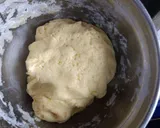
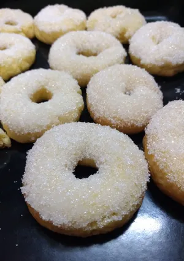

ROSQUITOS
con esta receta te van ha salir los mejores rosquitos
Ingredientes
- 300 gramo de harina leudante
- 3 huevos
- 1 limon
- 20 cm aceite
- 200 gramo de azucar
- 100 de leche
- azucar glass para espolvorear
Paso a paso
- Agregar el aceite con azucar, batir bien hasta que el azucar, agregar los huevos

- una vez integrado agregar el jugo del limon y la leche, seguir batiendo
- por ultimo agregar la harina de forma envolvente
- una vez formada la masa dejar reposar 30 minutos

- Precalentar el horno mientras reposa la masa
- Formar los rosquitos y llevar al horno por 15 minutos a 180 grados

- Dejar enfriar y espolvorear con azucar glass
